Gbt
GBT FRame
GBT FRAME
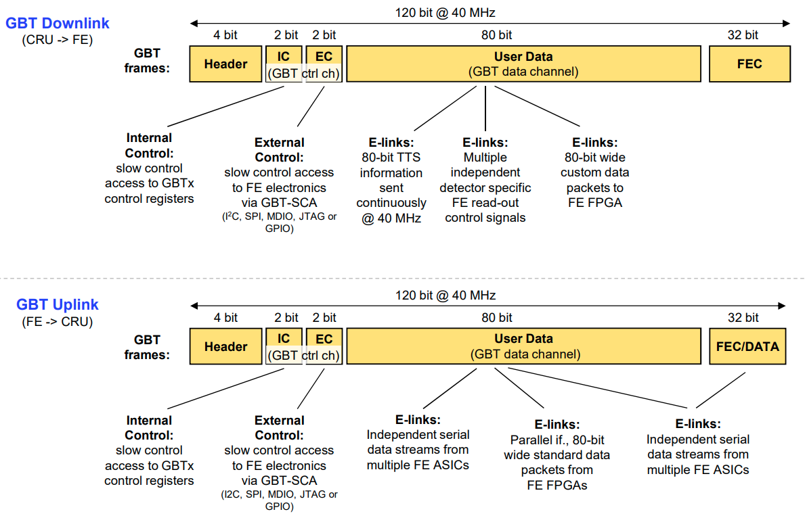 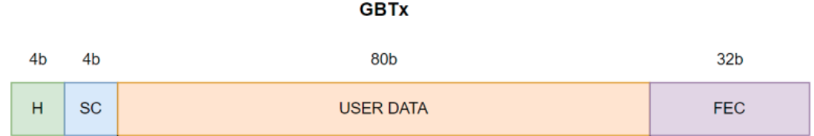
GBT Header
- 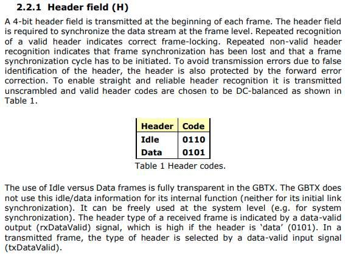
- gbt_bank_package.vhd
- 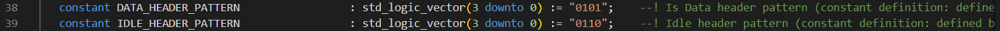
Rx
- gbt_rx_decoder.vhd
- 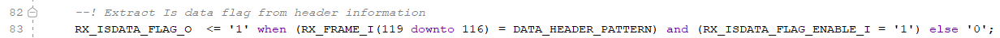
Tx
- 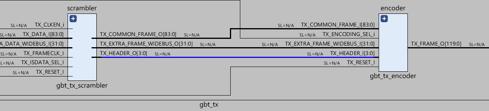
- gbt_tx_scrambler.vhd
- 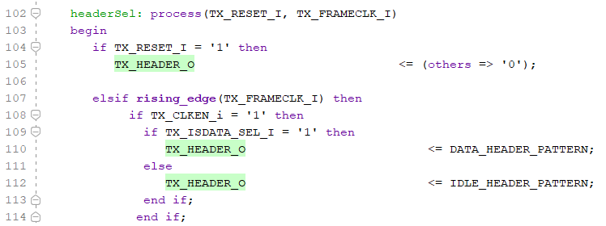
- VIO(txIsDataSel_from_user) --- > TX_ISDATA_SEL_I : in std_logic;
SC - {IC EC or SWT}
- dfv
- Есть 3 протокола конфигурауии
- GBT-EC (External Control) – используется для отправки конфигурационных данных в ASIC (интегральные схемы) на передающей электроник(FEE). - медленный (80 Мбит/с).
- GBT-IC (Internal Control) – применяется для конфигурирования микросхем GBTx. - медленный (80 Мбит/с).
- GBT-SWT (Single Word Transfer) – отдельный протокол, не использующий стандартный GBT.
Icec
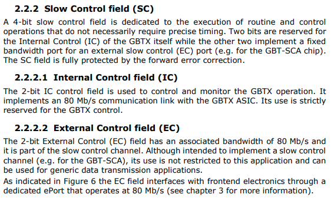
Зачм нужны - Протоколы конфигурации нужны для управления, настройки и мониторинга детекторов в эксперименте ALICE. Они позволяют передавать команды и параметры в электронику переднего края (FEE — Front-End Electronics), чтобы корректно работать с данными, получаемыми от детекторов. Разберём каждый из них подробнее.
DATA + isdatasel
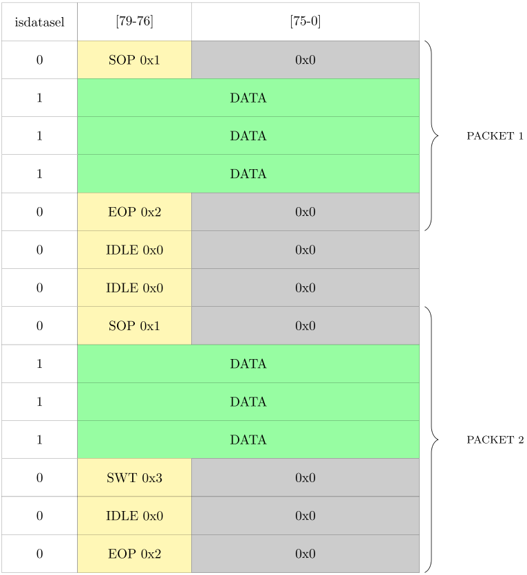 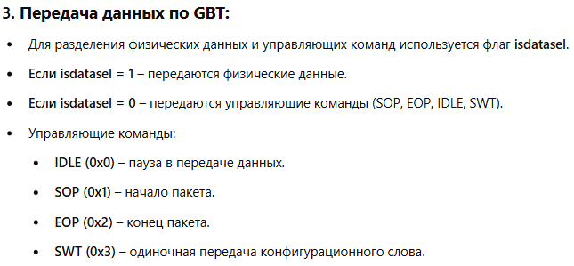 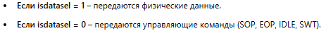 Физические данные обозначены флагом isdatasel = 1, а управляющие команды (IDLE, SOP, EOP, SWT) имеют флаг isdatasel = 0 и содержат другой заголовок, который хранится в поле данных GBT. The CRU extracts the SWT information from the data stream before it reaches the DMA engine and stores it in a dedicated FIFO which is accessed by DCS.
Rx
- gbt_rx_decoder.vhd
Tx
- gbt_tx_scrambler.vhd
- VIO(txIsDataSel_from_user) --- > TX_ISDATA_SEL_I : in std_logic;
GBT_FRAME - WIDE BUS
- gbt_bank_package.vhd
- 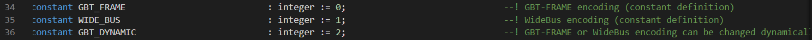
LATENCY
-
gbt_bank_package.vhd
- 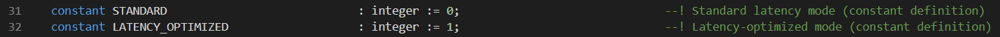
-
- 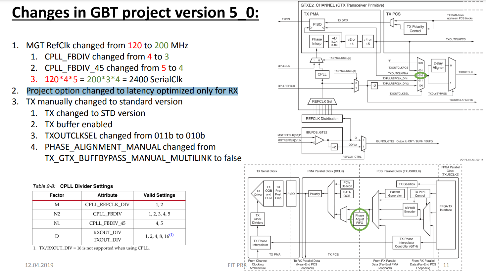
Frame
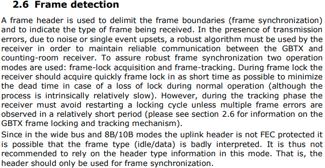
GBT - CRU
KC-705 -> CRU(ALF) test
 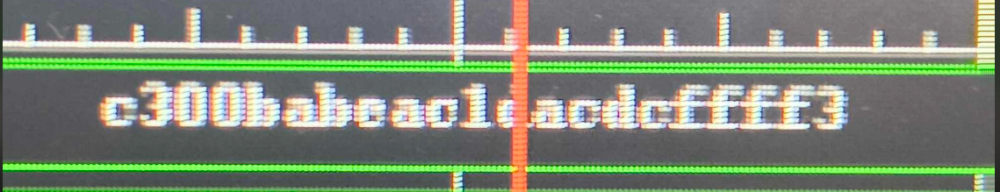
- разобраться почему мы вдем нули
- попробывать высыдать данные счетчиком и посмотреть все ли данные доходят
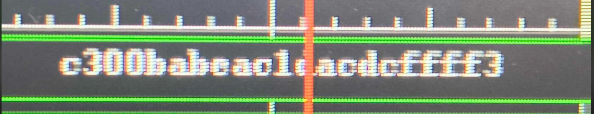
- разобраться почему мы вдем нули
- попробывать высыдать данные счетчиком и посмотреть все ли данные доходят
CRU(ALF) -> KC-705 test
- Пробывали высылать данные с ALF но на KC-705 было поусто
- При обновлении системы (Фринчишек лучше знает что он делал) появлялись какието данные на KC-705ъ
- Нужно сделать LoopBack что бы понимать что правильно высылаем данные - (приемник работает)
- В понедельние пойдет листа закупов
Проверка_изминеиня_битов
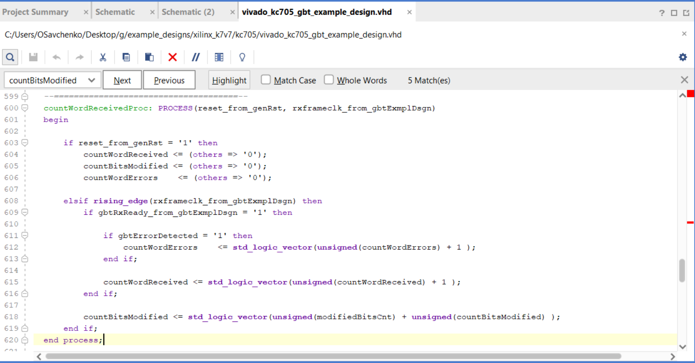 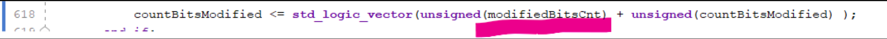 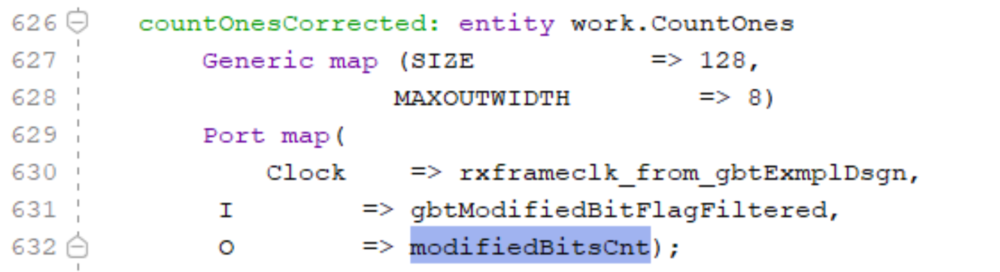
Fdvfd
- Как это работает?
- Детекторы передают данные к CRU (Central Readout Unit).
- Если isdatasel = 1, передаются физические события.
- Если isdatasel = 0, CRU определяет управляющие команды по старшим битам данных.
- CRU извлекает SWT и отправляет его в FIFO, доступный для системы управления DCS.